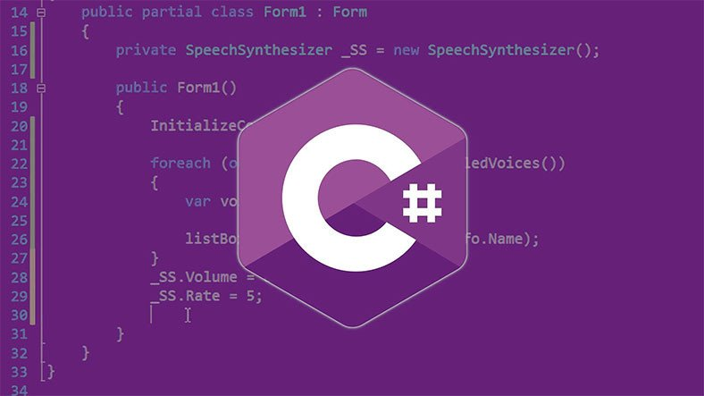

-
C Dili

C oldukça minimalist bir dildir ve diğer pek çok programlama dilinden daha düşük düzeylidir. Çoğu zaman, C'nin düşük düzeyli bir dil olduğu ya da bir yüksek seviye assembler olduğu söylenir. Her ne kadar bazan bir yüksek düzeyli dil olduğu söylense de, gerçekte C, yalnızca assembly dillerinden daha yüksek düzeylidir.
-
C++ Dili

C++ 1979 yılından itibaren Bjarne Stroustrup tarafından geliştirilen genel amaçlı, orta seviyeli, Nesne Yönelimli Programlama, Generic Programlama gibi programlama yöntemlerine imkan veren bir programlama dilidir
-
C# Dili
C#, Microsoft tarafından geliştirilen bir programlama dilidir. Programlama dilleri arasında en çok tercih edilen C ve C++ ile etkileşimli şekilde geliştirilen ve modern bir kodlama sahip olan C#, birçok platform destekleyen Java dili ile de oldukça fazla benzerlik gösteriyor